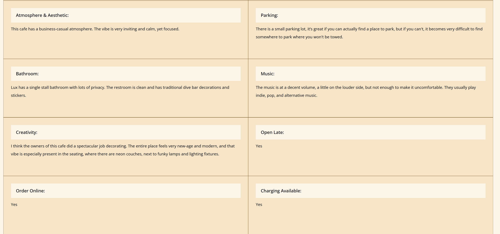
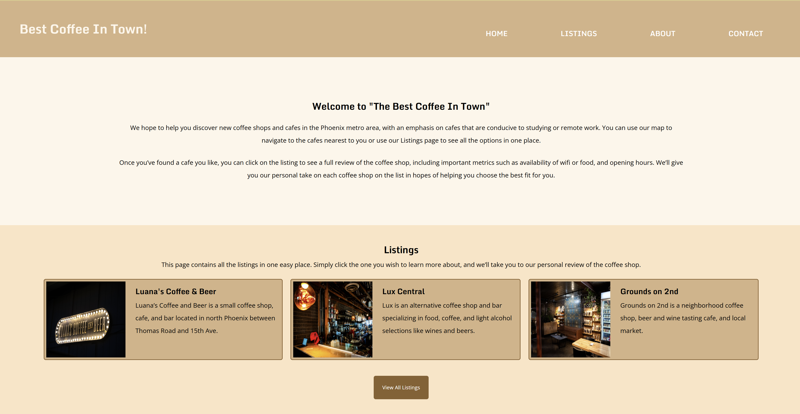
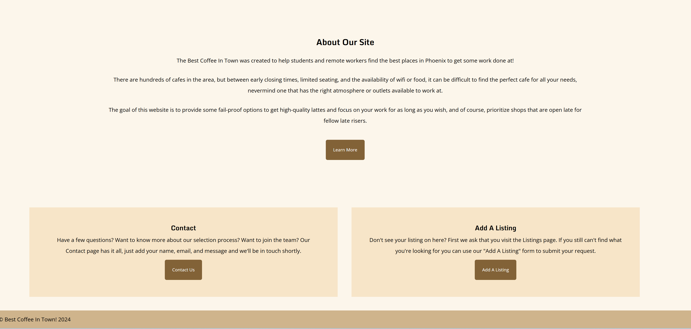

Best Coffee in Town
-

- 
- 
- 
Background
“Best Coffee In Town” was a website I created for my senior project at ASU. The purpose was to showcase all of the skills I’ve learned throughout the Graphic Information Technology program; I chose to focus on web development and photography, areas of study necessary to obtain my degree.
Skills
- HMTL, CSS, & JavaScript
- UI/UX Design
- Research & Problem-Solving
- Photography & Editing
- Copywriting
Process
I traveled around Phoenix visiting 20 highly rated coffee shops to determine which ones held true to their reviews and which ones were over-hyped. I rated each coffee shop on all categories from menu offerings, atmosphere, seating, study-friendliness, and more. I also took photos of each cafe to use on the site, all photos were taken by me. Putting it all together, I designed a website with listings of the best cafes in the Phoenix metro area.
Summary
The result is a comprehensive website displaying the best coffee shops in the Phoenix metro area. You can click on each shop to view more details like hours of operation, images of the cafe, parking info, and a brief description and history of each cafe.